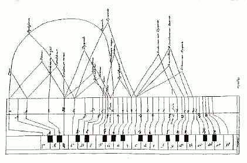

Bauen Sie Ihr eigenes Clavichord und erlernen Sie grundlegende Spieltechniken. In 5 Tagen
fertigen Sie Ihr persönliches Clavichord nach dem Original C-c³ 2-4-fach gebunden, ca. 300 × 100 × 980 mm, ca. 8kg leicht
tragbar mit Griff. Sie erhalten die Grundplatte mit Anhang und Stimmstock verleimt, sowie auch den Deckel vorgefertigt. Alle Arbeiten werden mit Handwerkzeugen durchgeführt. Bringen Sie dazu
Hammer, Laubsäge, Arbeitskleidung, Gehörschutz und Lust an handwerklicher Gestaltung und musikalischem Ausdruck mit. Alle Materialien, Kursgebühr, Werkzeugnutzung sind im Preis enthalten. Mahlzeiten zu eigenen Kosten. Kurspreise fragen Sie bitte bei uns an. Sommerkurse in Dresden im Clavichordgarten, Winterkurse in Venedig, Osaka. Hier gibt es noch weitere Information zum Clavichord- und Klavierspiel [pdf]
Projekt in Zusammenarbeit mit Museen mit dem Ziel das Clavichord
wieder populaer zu machen. Im speziellen fuer Kinder und Erwachsene
welche das Spiel eines Tasteninstruments erlernen moechten ist das
Clavichord das perfekte Instrument: tragbar, subtil und leise, mit leichten
Tasten und spielbar in jeder Wohnung ohne jemand zu stoeren. Es so wie
Wolfgang Amadeus Mozart machen und die musikalische Aktivitaet mit dem
Clavichord zu beginnen ist unser Motto fuer die Besucher des Museums.

Johannes
Keck, De cantu et musica sacra: Grundrisszeichnung eines
Clavichords, 1442
Klänge der leisesten Philharmonie, die durch ihre Leiseschwäche die Herzen berühren...
"Tafelmusik für Geniesser"
"Klangweltreise und -zeitreise fürs Wohnzimmer - eine Modeschau"
"Musik zum Träumen und Verlieben für jeden Anlass"
★★★ Geschenkidee ? Ihre Feier zu verschönen ? ★★★
Der Vogelgesang der Traversflöte und der Engelschor des Clavichords färben eine fantasievolle Klangmalerei durch ihre spielende musikalische Kommunikation, einen tänzerischen Puls und allerlei lebendige Improvisationen. Im historischen Gewand wirkt das Programm locker, authentisch und unverwechselbar.
Die feinen Klänge der historischen Instrumente bezaubern mit einer Auslese von Renaissance bis Klezmer, von internationaler Altvolksmusik bis Impressionismus, verbunden mit einfühlsamer Improvisation, Fantastisches und Humorvolles von G. B. Riccio, A. Vivaldi, J. M. R. Hotteterre, J. S. Bach, J. Quantz, W. A. Mozart, J. Haydn, E. Satie, u. a.
- Fast wie im Rheinsberger Schloß Flötenmusik vom “Alten Fritz”. Danke für alle Virtuosität und weiterhin gutes Spiel!
- Die leisen Töne hört man im Herzen. Die lauten, nur am Ohr. Danke für die Darbietung der leisen Töne!
- Eine Stunde zum Innehalten und zusammen mit den Überleitungen von Stück zu Stück und dem Programmheft eine echtes "Gesamtkunstwerk".
-Vielen Dank für das wunderschöne Konzert! Die Musik von Ihnen verzaubert...
- Wir hörten Sie heute zum zweiten Mal. Es war noch schöner als das letzte Konzert! Schön wäre es, wenn wir bald auch eine CD von Ihnen bekommen könnten...
Tomomi
Okunogeb.
1979 in Osaka, Japan, studierte Musik in Osaka und Wien an der Universität für Musik. Neben klassischer Querflöte spezialisierte
sie sich auf alte Musik mit der flauto traverso. Meisterkurse in Deutschland, Niederlanden, England, Frankreich sowie zahlreiche Konzerte in Europa und Japan.
Martin
Rotter geb.
1968 in Klosterneuburg, Österreich, studierte Klarinette und Klavier an der Universität für Musik
in Wien und Physik an der TU in Wien. Gründer des legendären "Glasscherben Quartetts", in dem er auf dem "Pickssüßen Hölzl" (eine sehr kleine Wiener Klarinette in G) das Publikum mit Wiener Schrammelmusik begeistert. (www.glasscherben.at)
Musikbegeisterte Lehrbegierige beraten die beiden mit viel Humor und Leidenschaft.